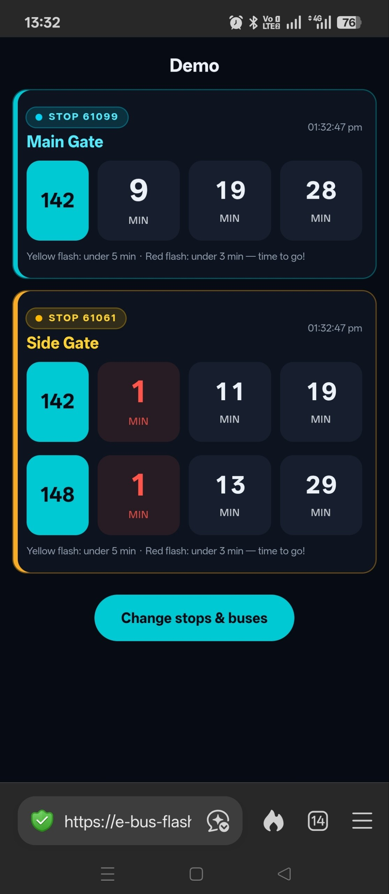

BusGlance
See the buses you care about across nearby stops at a glance.
busglance started as a simple class exercise and became something I kept refining for my own commute. I have more than one nearby bus stop, so the useful question is not only “when is the next bus?” but “which way should I walk?”
The interface focuses on a small set of chosen stops and services, using clear visual cues so the decision can be made quickly without digging through a full transport app.
